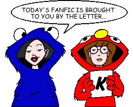
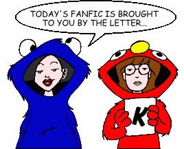

Fan Fiction
"K" by Title

Fan Fiction
"K" by Title

|
Authors: If you no longer wish for any of your stories to be posted, please send e-mail to fanfic@lawndale.net and I will remove them at once. |
| Kadhimiya [Artwork] (*) By Guy Payne Category: Miscellaneous A Morgendorffer pays the ultimate sacrifice. |
| Keeping Up With the Benjamins By Rey Fox Category: Crossovers & Parodies Space Ghost decides to enlist help from MTV to make his show more hip for the younger crowd. Unfrotuantely, that help arrives in the form of Our Heroines... |
| Kevin and Brittney's Romance By Mitch Category: Past & Future A look at Brittney's relationship with Kevin in the future. |
| Kick Me By Melissa Yanouski Category: Miscellaneous An invitation from Tom takes Daria beyond Lawndale High to a school a little bit less crazy: Fielding, Tom's school. Daria meets Tom's classmates and his teachers as she and Tom trek through it as Daria waits it over a few days. |
| The Kids Aren't Alright By Cassie Murphy Category: School Situations Telephone taping, Ms. Li's unfinished homework, aliens, and Luigi... all add up to a reoccurrence of everybody's favorite rash! |
| Kill Tom (Volumes 1 and 2) (*) By The Angst Guy Category: Crossovers & Parodies The Deadly Fashion Viper Squadron meets its match in this parody of Quentin Tarantino's "Kill Bill" movies. |
| A Killer in Lawndale By Maria Isais Category: Miscellaneous A killer is on the loose in Lawndale, and he strikes a little too close to home... |
| Killjoy Was Here By Erin Mills Category: Crossovers & Parodies In a corrupt future where intellectual outcasts are oppressed and imprisioned by Dr. Sandra Griffin and the People for Proactive Popularism, Daria Anne Marie Morgendorffer, the last intellectual hero, begins a last desperate gambit to escape from prison and restore the right to think to the world. Based on the Styx album "Killroy Was Here." |
| Kind of Blue By Don Fields Category: Miscellaneous A (kinda) normal day at the movies with the Morgendorffers, among other things. |
| A Kiss for Quinn By Bryan McGucken Category: Miscellaneous Is Quinn just a Fashion Club bimbo, or is she a very scared, but very, very intelligent adolescent girl who seeks recognition for her efforts? This story attempts to answer that question. |
| The Kiss of Soft Wings By Deref Category: Romance A microfic in which Jamie takes Quinn for a fine dining experience. |
| Kiss Until By Renfield Category: Miscellaneous Daria is shocked when she discovers who Jane is now dating. |
| Kitsune [Artwork] By Rey Fox Category: Sci-Fi, Fantasy & Horror Trent is smitten with a mysterious red-haired beauty that he meets on the side of the road. Daria, naturally, is jealous, but as events unfold, she begins to suspect that this girl is more than she appears to be. |
| A Knight to Remember (*) By The Angst Guy Category: Romance An offbeat "Daria" shipper about a girl, a guy, and a Batmobile. The tale continues from where the fifth-season episode "Sappy Anniversary" leaves off. |